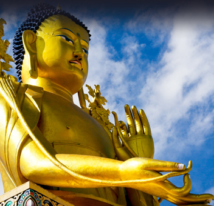

Buddha Poornima:
Being the stronghold of Buddhism, Buddha Purnima is celebrated with fervent zeal in Dharamshala. Buddha’s birthday is a significant day of celebrations for the Buddhists and it is observed in the month of April / May.